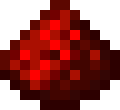
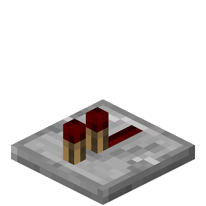
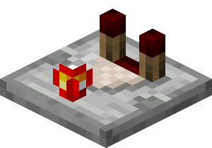

Minecraft Quiz
How well do
you
know redstone?

noob:
How far do pistons push?
10 blocks
12 blocks
16 blocks
What is maximum signal strength?
8
6
15
What can't dispensers do?
shear sheep
light fires
fill cauldrons

pro:
Which numeral system works best with redstone?
hexidecimal
decimal
octal
Which block's state change doesn't update observers?
leaves
chests
redstone ore
Which biome do hostile mobs spawn in?
mushroom island
pale oak forest
deep dark

hacker:
Which doesn't a detector rail do?
read furnace minecart contents
give signals that are always multiples of 10 redstone ticks
contain mobs
Which event happens in zero ticks?
scaffolding blockstates propigate
redstone lamps unpower
piston retracts
What logic gate is most versatile?
and
nand
or